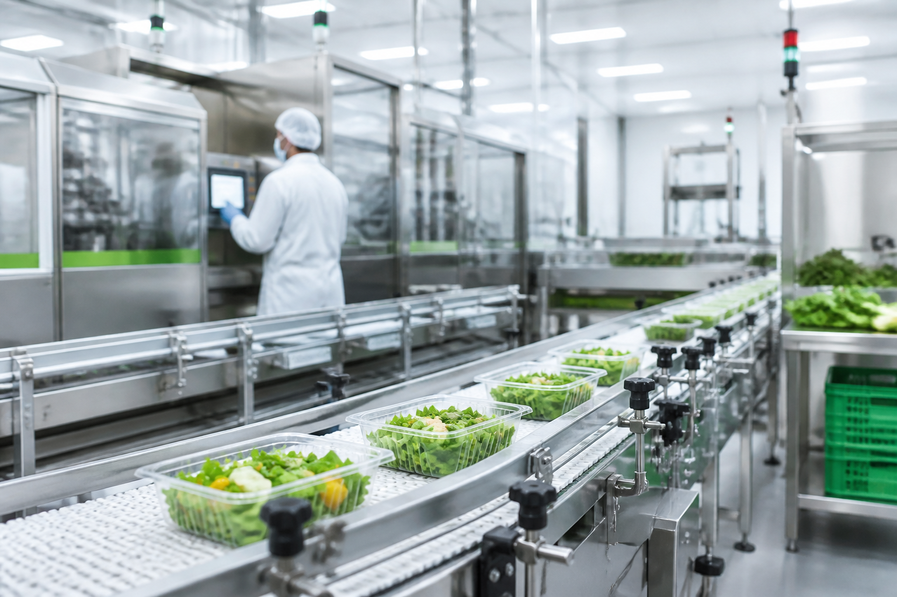

Güvenilir Tedarik
Gıda
Gıda sektöründe kalite, izlenebilirlik ve operasyonel süreklilik temelinde güvenilir tedarik ve süreç yönetimi çözümleri sunuyoruz.
- Ürün tedariki ve tedarikçi koordinasyonu
- Kalite kontrol, hijyen ve uygunluk takibi
- Paketleme, sevkiyat ve teslimat planlama